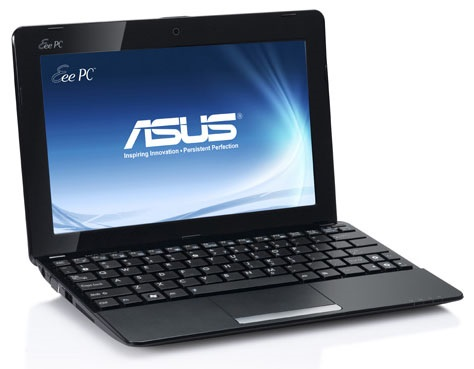
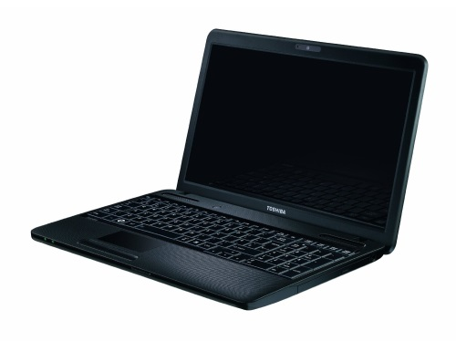
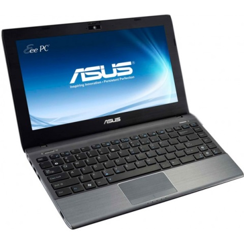
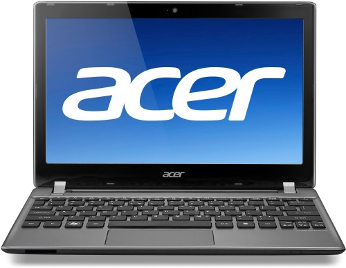
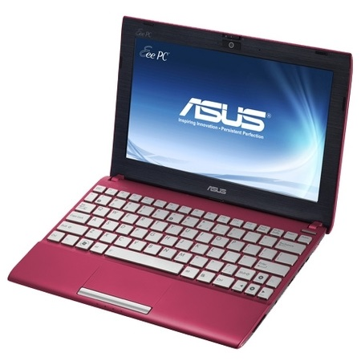
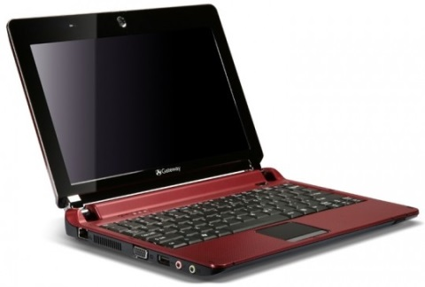
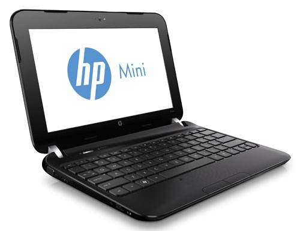
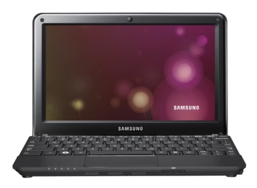

Разделы
Как правильно выбрать нетбук?
Нетбук – это что-то среднее между полноценным ноутбуком и планшетом, он имеет меньший экран, чем ноутбук, однако содержит в себе больше возможностей, чем планшет. Тем самым данный вид компьютерной техники завоевал целый ряд поклонников. Если Вы захотели присоединиться к поклонникам нетбуков, то рекомендуем перед этим детально изучить нашу статью, в которой поговорим о том, как правильно выбрать нетбук для работы, учебы и даже для игр. 
12 правил, как выбрать лучший нетбук
- Определитесь с размером экрана нетбука
- Не нужно выбирать тяжелый нетбук!
- Остановите свой выбор на достойном процессоре
- Нужно экономить на размере оперативной памяти!
- Определитесь с объемом жесткого диска!
- Сможете ли Вы обойтись без оптического привода?
- Обязательно стоит купить нетбук со встроенным Wi-Fi адаптером!
- Встроенный Bluetooth модуль может значительно облегчить Вашу жизнь!
- При выборе нетбука для игр в первую очередь обращайте внимание на тип графического контроллера!
- Встроенный тип – это один из самых экономных видов, так как позволяет снизить стоимость нетбука. Поэтому для геймеров данный нетбук окажется бесполезной тратой денег. Хотя поиграть, конечно же, получиться, просто ценители будут не особо довольны графической оболочкой.
- Встроенный и дискретный тип – это два графических чипсета, одновременно встроенных в нетбук. Встроенный чипсет запускается для работы в несложных задачах (чтобы экономить время работы нетбука), а дискретный тип графического контроллера запускается при старте современных игр, требующих достаточно мощных показателей видеокарты.
- Постарайтесь выбрать нетбук без установленной операционной системы
- Нетбук должен быть «правильной» фирмы!
- Acer – невысокие цены и хорошее качество;
- ASUS – отличаются классическим дизайном и долговечностью;
- DELL – выпускают практичные и простые типы нетбуков;
- HP – оригинальный дизайны, однако часто завышают цены за свой бренд;
- Lenovo – один из лидеров на рынке, так как за достаточно низкую цену можно получить отличный нетбук;
- Samsung – отличаются приятным дизайном и качеством всех материалов и составляющих;
- Toshiba – бюджетный и интересный вариант для студентов.
- Время работы – очень важный показатель при выборе нетбука!
Первым делом Вы должны определить, какой размер экрана Вас устроит. Нетбуки, как правило, выпускают с диагональю от 8 до 13 дюймов, так как именно в этих пределах нетбук не будет казаться громоздким и неудобным. Если Вы собираетесь работать за нетбуком в дороге (метро, автобусе, такси или в собственной машине), то лучше обратить внимание на модели с меньшим экраном (до 10 дюймов). Однако если работа за ним будет происходить в офисе, за удобным компьютерным столом, то здесь нужно взять ориентир на девайсы с диагональю 12-13 дюймов. Такую же диагональ мы рекомендуем покупать тем, кто выбирает нетбук для учебы.
Большинство моделей данной техники имеют вес в пределах от 1 до 1,5 килограмм. В принципе получается, что любой вес приемлем. Но из личного опыта хотим сказать, что при длительном ношении нетбука в сумке, а тем более в руках, эти полкилограмма играют немаловажную роль! Ведь мы нетбук покупаем в первую очередь для того, чтобы быть мобильными и не чувствовать лишних устройств при себе.
Очень часто покупатели совершают одну и ту же ошибку – не смотрят на модель процессора, а ведь именно от него зависит скорость компьютера и быстродействие всех процессов. Кроме того, от него будет также зависеть и время работы батареи, ведь есть процессоры, которые больше требуют энергии, а есть те, что экономят её за счёт продуманной технологии работы. Поэтому отнеситесь к этому компоненту серьезно.
По поводу вопроса: «Какой именно тип процессора и частоту брать?» всегда разгорается много споров, так как одни восхваляют фирму Intel, другой лагерь – AMD. В принципе, это два хороших производителя! Однако если выбираете нетбук для игр, то обратите внимание на процессоры AMD (A6 и A8), если для учебы или работы, то Intel’у не будет равных (лучшими в линейки будут Core i5 и Core i7).

У большинства пользователей сложился не совсем верный стереотип: чем больше оперативная память, тем быстрее работает компьютер. Это с одной стороны верное суждение, однако, при условии, если прочие параметры равные (в частности, при одинаковых процессорах). Команда MasterServis24.RU придерживается следующего мнения:
лучше взять нетбук с более мощным процессором, но слабой оперативной памятью, чем наоборот!
Не забывайте, что оперативную память практически всегда можно добавить и стоить это будет относительно немного (где-то 50-ая часть от стоимости нетбука), поэтому заострять на ней внимание – не стоит!
Если выбираете нетбук для игр или просмотров фильмов, то лучше выбрать тот нетбук, в котором будет максимальный объем накопителя, чтобы потом не пришлось покупать дополнительный внешний жесткий диск, где будете хранить остальную часть файлов. Сегодня в основном можно встретить модели с объемом накопителя от 100 до 800 гигабайт, чего в принципе достаточно.

В основном нетбуки имеют HDD-диск, однако если Вам важна скорость работы, то рекомендуем выбрать модели, которые будут содержать SDD-диски. Они отличаются от старого образца заметно повышенной скоростью. Цена на такую технику будет выше, однако она будет поднята обосновано!
Если Вы привыкли записывать CD/DVD диски, а также пользоваться ими, то с нетбуком Вам придется от этого удовольствия отказаться, так как 99% современных нетбуков не имеют оптического привода. Вместо них можно использовать USB-флешки и внешние жесткие диски.
Наша команда на сегодняшний день смогла найти лишь один нетбук с возможностью записи дисков, а также их чтения - Acer Aspire One AO722-C68kk. Однако его стоимость приближается уже к полноценному ноутбуку, то есть его покупка является совершенно нелогичным решением.

Если ещё 3-4 года назад Wi-Fi был достаточно редким явлением, то сейчас он приобрел бурное развитие. В наших квартирах есть уже по нескольку устройств, имеющих доступ к Интернету (смартфоны, планшеты, нетбуки, компьютеры и т.д.), однако всех их подсоединять по проводу – было бы глупо, поэтому и придумали такой интерфейс, как Wi-Fi. При помощи него даже можно пользоваться Интернетом в общественных местах (кафе, барах, отелях, учебных заведениях и других местах, где есть точки доступа).
Даже если Вам сейчас кажется Wi-Fi чем-то совершенно ненужным, то поверьте, пройдет совсем немного времени, и Вы измените свою позицию.
Рекомендуем выбирать модели с уже встроенным модулем, так как именно благодаря Bluetooth мы можем без проводов подключить к своему нетбуку телефон, смартфон, КПК, планшет, MP3-плеер, Bluetooth-клавиатуру, Bluetooth-мышь, графический планшет и массу других девайсов. Вы только представьте, от какого количества проводов Вы себя освобождаете!
Да, можно поступить несколько иначе, купив отдельный USB-модуль Bluetooth и вставив его в компьютер, однако мы займёт один разъем USB, а также потратим лишние деньги, что не есть хорошо и правильно!

Графический контроллер – это не что иное, как видеокарта. Она в нетбуках бывает двух типов:
Однако признаемся честно – полноценно играть в игры на таком маленьком экране и довольно слабом устройстве (как ни крути, но стационарный компьютер будет мощнее) довольно сложно. Поэтому перед покупкой мы бы рекомендовали в магазине или у друзей попросить показать, как выглядят компьютерные игры на нетбуке, насколько они реалистичны и могут ли работать совершенно без зависаний.
Помните, за установленную операционную систему Вы всегда переплачиваете, поэтому если у Вас есть возможность приобрести нетбук без установленной ОС и за меньшую стоимость – сделайте это! В комплекте, как правило, идут урезанные версии и на них установлена масса ненужных программ, поэтому от этого придется поскорее избавиться.
Однако если Вы не умеете самостоятельно устанавливать Windows (или дистрибутивы Linux) и не знаете, где или у кого это сделать, то тут, конечно же, ситуация безвыходная и наоборот следует искать технику с предустановленной ОС (желательно Windows, так как она намного проще в управлении, чем Linux).
Если нетбук будет рабочим и использоваться исключительно в офисе, то здесь тоже следует подумать о легальной операционной системе, идущей в комплекте с нетбуком, ведь если Вы будете пользоваться нелицензированной системой Windows, то можете получить штраф от соответствующих органов.

Вот мы и подошли к последнему пункту наших правил. Однако он не должен быть забытым при покупке. Дело в том, что приобретая нетбук, мы покупаем, прежде всего, независимость и мобильность, теперь не нужно будет сидеть только за компьютерным столом или вообще находиться в квартире. Теперь мы будем иметь доступ к компьютеру и Интернету практически везде. Однако вот электропитание будет далеко не в каждом месте, поэтому очень важно позаботиться об этом моменте.
Другими словами Вам нужна мощная батарея, которая бы смогла выдержать много часов работы (8 – 12 и не меньше). Возможно, Вы подумаете, что столько времени работать Вы за ним вне дома и не будете, однако здесь нужно учитывать погрешность, которую любят допускать производители при формировании характеристики нетбука. Ведь зачастую они указывают время общей работы, но не уточняют, что понимается под понятием "общей работой". Как правило, в их понимании работа – это просто включенный нетбук, а мы ведь не будем просто сидеть с включенным девайсом?! Если он работает, то значит, мы смотрим фильмы, редактируем документы, общаемся по Интернету, играем в игры и т.д. А при таких вот действиях время работы может снижаться чуть ли не вдвое. И получается, что из написанных 8-10 часов по факту работает нетбук максимум 4-5.

Какой нетбук станет идеальным?
У каждого свои интересы и свои требования к нетбуку, однако, давайте мы составим полную характеристику устройства, которое смогло подойти практически любому нашему читателю?!
Итак, что должен иметь нетбук:
- 10 дюймов размер экрана (оптимальная диагональ);
- Вес не должен превышать 1.1 килограмма;
- Мощный процессор от фирмы Intel (Core i7);
- Хватило бы вполне 4 гигабайт оперативной памяти;
- SSD-диск объемом 500 гигабайт;
- Встроенный Wi-Fi адаптер для беспроводного Интернета;
- Встроенный модуль Bluetooth-соединения, чтобы подключать другие девайсы без проводов;
- Два типа графического контроллера: встроенный и дискретный;
- Операционная система должна отсутствовать;
- Фирма-производитель: Lenovo, Samsung или ASUS;
- Батарею такой мощности, которая бы смогла обеспечить 8-10 часов стабильной работы.

Вот и все правила… Удачной покупки, друзья!

Новости
09.02.11
Поздравляем всех с новым семестром! Желаем сдать экзамен по "Интернет- технологиям" на отлично ...
18.03.11
Появился новый ноутбук Lenovo Y550A1-i724G500B-B Подробней…
20.05.11
Желаем всем студентам 4 курса ОТИ НИЯУ МИФИ получить ВСЕ зачеты и допуски к сессии Подробней…